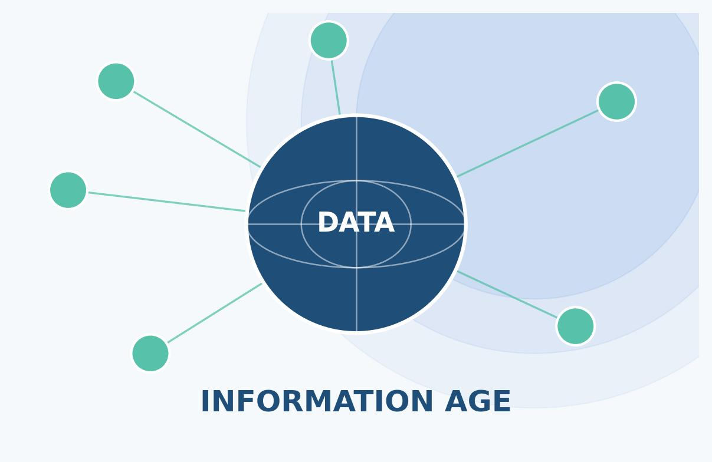
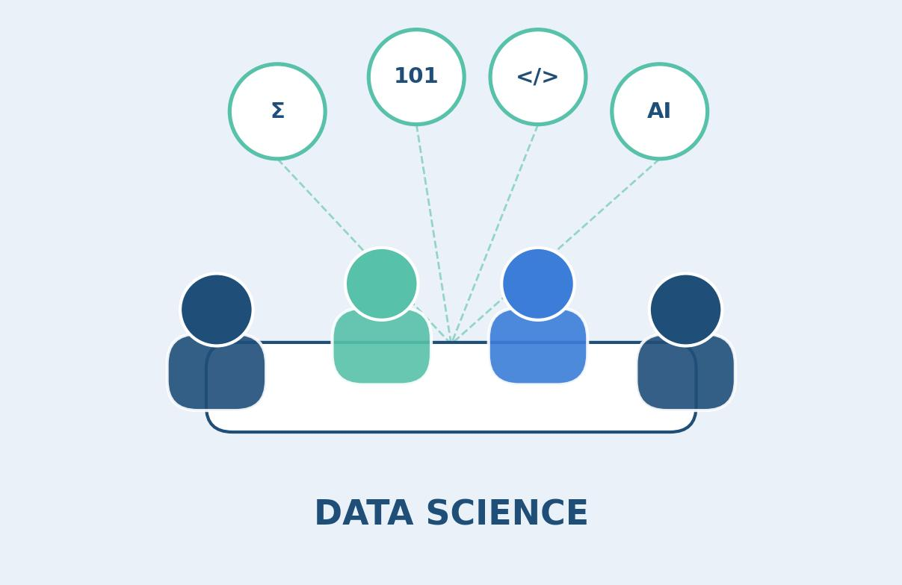
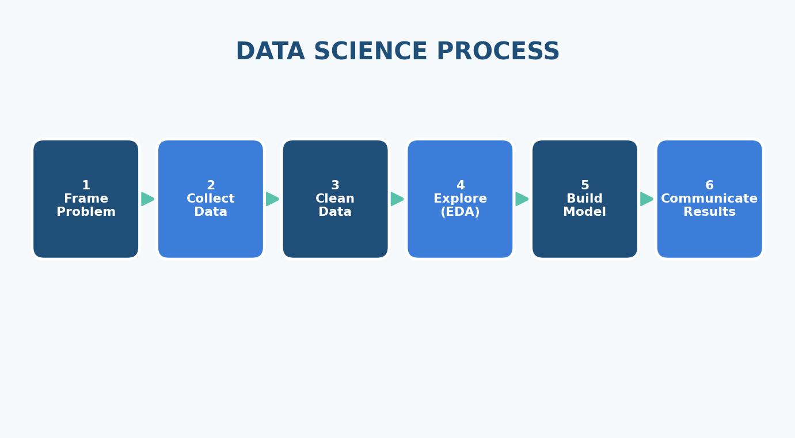
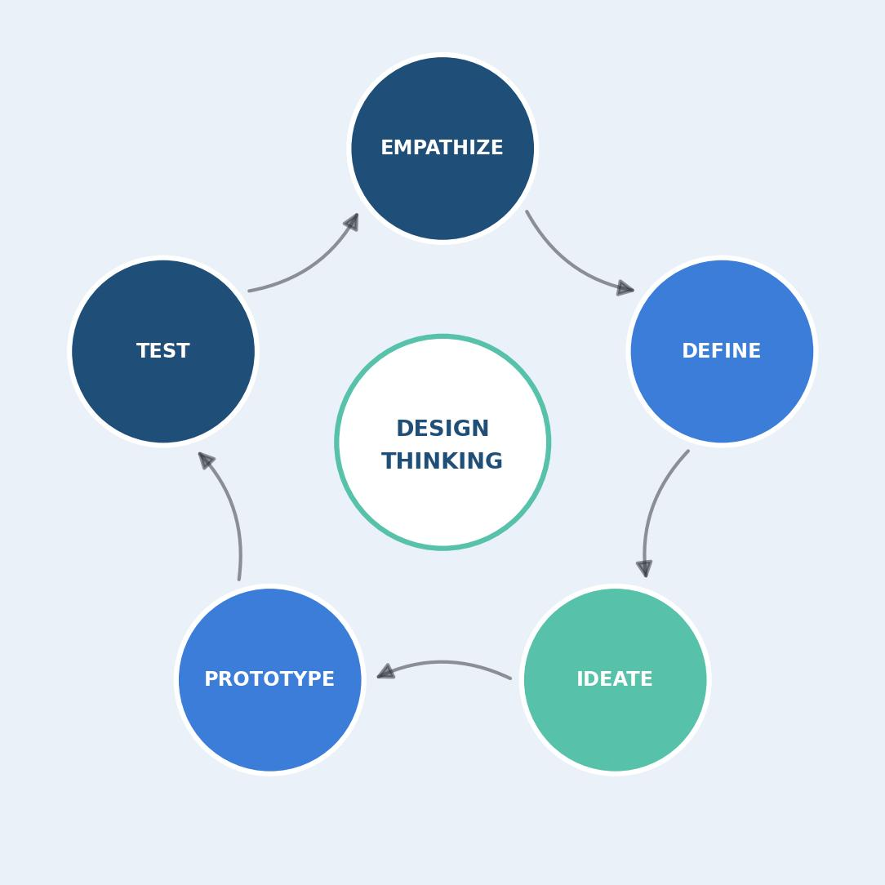
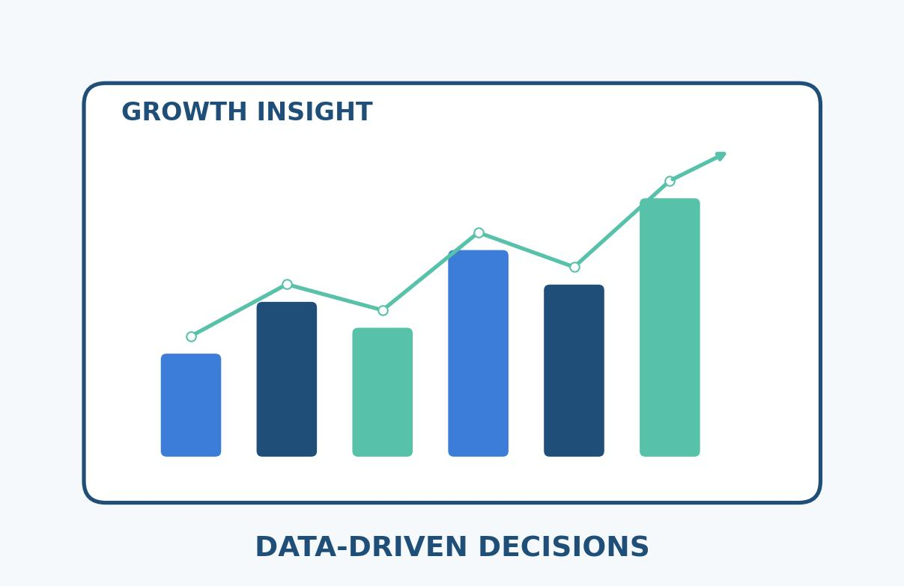
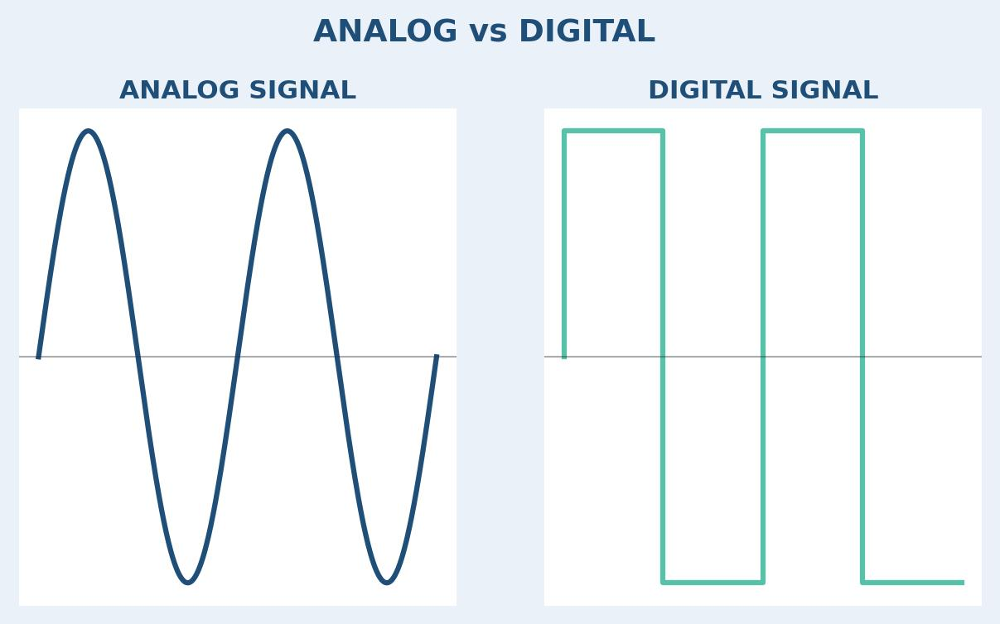

ยุคของข้อมูลสารสนเทศ
ทุกวันนี้เราอยู่ในโลกที่ข้อมูลถูกสร้างขึ้นตลอดเวลา ไม่ว่าจะเป็นข้อมูลจากโทรศัพท์มือถือ โซเชียลมีเดีย เซนเซอร์ต่าง ๆ หรือระบบคอมพิวเตอร์ในองค์กร ข้อมูลเหล่านี้เมื่อถูกนำมา จัดการ วิเคราะห์ และตีความอย่างเป็นระบบ จะกลายเป็น "สารสนเทศ" ที่มีคุณค่าและสามารถ นำไปใช้ตัดสินใจได้จริงในชีวิตประจำวันและการทำงาน
หน่วยการเรียนรู้นี้จะพาไปทำความรู้จักกับศาสตร์ที่เรียกว่า "วิทยาการข้อมูล (Data Science)" ตั้งแต่ความหมาย กระบวนการทำงาน ไปจนถึงแนวคิดการออกแบบ เพื่อแก้ปัญหาโดยใช้ข้อมูลเป็นศูนย์กลาง

ความหมายของวิทยาการข้อมูล

วิทยาการข้อมูล (Data Science) คือ การนำวิธีการทางวิทยาศาสตร์มาใช้ ทำความเข้าใจธรรมชาติของข้อมูลในรูปแบบต่าง ๆ ครอบคลุมตั้งแต่การจัดเก็บ รวบรวม ตรวจสอบ กรอง ไปจนถึงการวิเคราะห์และวิจัยข้อมูลจำนวนมาก
ศาสตร์นี้อาศัยความรู้จากหลายด้านผสมผสานกัน เช่น คณิตศาสตร์ สถิติ การเขียนโปรแกรม และปัญญาประดิษฐ์ (AI) เพื่อค้นหารูปแบบของข้อมูลที่ซ่อนอยู่ และนำผลที่ได้ไปใช้ วางแผนเชิงกลยุทธ์หรือช่วยตัดสินใจได้อย่างแม่นยำมากขึ้น
- ศึกษาโครงสร้างและธรรมชาติของข้อมูล
- ใช้กระบวนการทางวิทยาศาสตร์และอัลกอริทึม
- นำผลวิเคราะห์ไปใช้กำหนดเป้าหมายและตัดสินใจ
คำศัพท์เทคโนโลยีน่ารู้
| คำศัพท์ | ความหมายโดยสรุป |
|---|---|
| Data Modeling | การสร้างแบบจำลองเพื่อแทนโครงสร้างของข้อมูล |
| Data Visualization | การนำข้อมูลมาแสดงผลในรูปแบบภาพให้เข้าใจง่าย |
| Feature Engineering | การสร้างตัวแปรเฉพาะเพื่อใช้ในการวิเคราะห์ |
| Machine Learning | กระบวนการที่ทำให้เครื่องเรียนรู้จากข้อมูลได้เอง |
หลักการและกระบวนการทางวิทยาการข้อมูล
กระบวนการทางวิทยาการข้อมูลเป็นกรอบการทำงานที่ช่วยให้การแก้ปัญหาด้วยข้อมูลเป็นไป อย่างมีขั้นตอนและเป็นระบบ ประกอบด้วย 6 ขั้นตอนหลัก ดังนี้
วางกรอบปัญหา
ทำความเข้าใจโจทย์และกำหนดเป้าหมายให้ชัดเจนว่าต้องการแก้ปัญหาอะไร
รวบรวมข้อมูล
ดึงข้อมูลที่เกี่ยวข้องจากหลายแหล่ง เช่น ฐานข้อมูล เว็บไซต์ หรือแบบสอบถาม
ทำความสะอาดข้อมูล
ตรวจสอบและแก้ไขข้อมูลที่ผิดพลาดหรือไม่สมบูรณ์ก่อนนำไปวิเคราะห์
วิเคราะห์เชิงสำรวจ
ค้นหารูปแบบ แนวโน้ม และความสัมพันธ์ที่ซ่อนอยู่ในชุดข้อมูล
สร้างแบบจำลอง
พัฒนาโมเดลเพื่อพยากรณ์หรือจำแนกข้อมูล แล้วทดสอบความแม่นยำ
สื่อสารผลลัพธ์
นำเสนอผลการวิเคราะห์ด้วยภาพและเรื่องราวที่เข้าใจง่ายแก่ผู้เกี่ยวข้อง

การคิดเชิงออกแบบสำหรับวิทยาการข้อมูล (Design Thinking)
นอกจากกระบวนการวิเคราะห์ข้อมูลแล้ว การคิดเชิงออกแบบยังเป็นเครื่องมือสำคัญที่ช่วยให้ การแก้ปัญหาตรงกับความต้องการของผู้ใช้จริง โดยให้ความสำคัญกับผู้ใช้เป็นศูนย์กลาง (User-centered) ผ่าน 5 ขั้นตอนที่ทำซ้ำได้เรื่อย ๆ เพื่อปรับปรุงแนวทางให้ดีขึ้น
- เข้าใจปัญหา (Empathize) — ทำความเข้าใจความต้องการที่แท้จริงของผู้ใช้
- กำหนดปัญหา (Define) — สังเคราะห์ข้อมูลเพื่อระบุแก่นแท้ของปัญหา
- ระดมความคิด (Ideate) — คิดนอกกรอบเพื่อหาทางแก้ปัญหาที่หลากหลาย
- สร้างต้นแบบ (Prototype) — ออกแบบต้นแบบที่แก้ไขได้ง่ายและต้นทุนต่ำ
- ทดสอบ (Test) — ทดลองใช้จริงเพื่อเก็บข้อเสนอแนะมาปรับปรุง

ประโยชน์ของวิทยาการข้อมูล

การนำวิทยาการข้อมูลมาใช้ช่วยให้องค์กรและบุคคลสามารถมองเห็นภาพรวมของสถานการณ์ ได้ชัดเจนขึ้น ลดการตัดสินใจที่อาศัยเพียงความรู้สึก และเปลี่ยนมาใช้ข้อเท็จจริง ที่มาจากการวิเคราะห์ข้อมูลจริง
- ช่วยพยากรณ์แนวโน้มในอนาคต เช่น ยอดขายหรือพฤติกรรมผู้บริโภค
- เพิ่มประสิทธิภาพในการแก้ปัญหาและลดความผิดพลาด
- สร้างมูลค่าเพิ่มให้กับผลิตภัณฑ์และบริการ
- สนับสนุนการวางแผนเชิงกลยุทธ์อย่างมีหลักฐานรองรับ
ตัวอย่างการนำไปใช้และเครื่องมือเก็บข้อมูล
ก่อนจะวิเคราะห์ข้อมูลได้ ต้องเริ่มจากการเก็บรวบรวมข้อมูลอย่างเหมาะสม ซึ่งมีเครื่องมือ หลากหลายรูปแบบให้เลือกใช้ตามลักษณะของงาน
- แบบสอบถาม (Questionnaire) — เก็บข้อมูลจากกลุ่มเป้าหมายจำนวนมาก
- แบบสังเกต (Observation) — บันทึกพฤติกรรมที่เกิดขึ้นจริงโดยไม่ต้องถาม
- แบบตรวจรายการ (Checklist) — ทำเครื่องหมายสิ่งที่พบหรือไม่พบอย่างรวดเร็ว
- แบบสัมภาษณ์ (Interview) — พูดคุยเพื่อเก็บข้อมูลเชิงลึกจากผู้ให้ข้อมูล
- แบบทดสอบ (Test) — วัดความรู้ ความสามารถ หรือทักษะของบุคคล

อีกตัวอย่างที่น่าสนใจคือความแตกต่างระหว่าง สัญญาณอนาล็อก ซึ่งเป็นสัญญาณต่อเนื่อง กับ สัญญาณดิจิทัล ที่มีเพียงสองสถานะคือ 0 และ 1 คอมพิวเตอร์จำเป็นต้องแปลงสัญญาณอนาล็อกให้เป็นดิจิทัลก่อน จึงจะสามารถนำข้อมูลนั้น ไปประมวลผลในกระบวนการทางวิทยาการข้อมูลได้อย่างมีประสิทธิภาพ
สรุปเนื้อหา
วิทยาการข้อมูล (Data Science) คือการผสมผสานความรู้ทางคณิตศาสตร์ สถิติ และ เทคโนโลยีคอมพิวเตอร์ เพื่อทำความเข้าใจและใช้ประโยชน์จากข้อมูลจำนวนมาก โดยมีกระบวนการทำงาน 6 ขั้นตอน ตั้งแต่การวางกรอบปัญหาไปจนถึงการสื่อสารผลลัพธ์ และอาศัยแนวคิดการคิดเชิงออกแบบ (Design Thinking) เพื่อให้แน่ใจว่าทางออกที่ได้ ตอบโจทย์ความต้องการของผู้ใช้อย่างแท้จริง
การเรียนรู้เรื่องนี้จึงเป็นพื้นฐานสำคัญที่ช่วยให้นักเรียนสามารถนำแนวคิดเชิงคำนวณ มาประยุกต์ใช้แก้ปัญหาในชีวิตจริงได้อย่างเป็นระบบ รู้เท่าทัน และมีจริยธรรม
แหล่งอ้างอิง
เอกสารประกอบการเรียนและแหล่งข้อมูลเพิ่มเติมที่เกี่ยวข้อง
- หนังสือเรียนรายวิชาพื้นฐาน วิทยาการคำนวณ ม.5 หน่วยที่ 1 (สสวท.)
- สถาบันส่งเสริมการสอนวิทยาศาสตร์และเทคโนโลยี (สสวท.) — scimath.org
- IBM — What is Data Science?